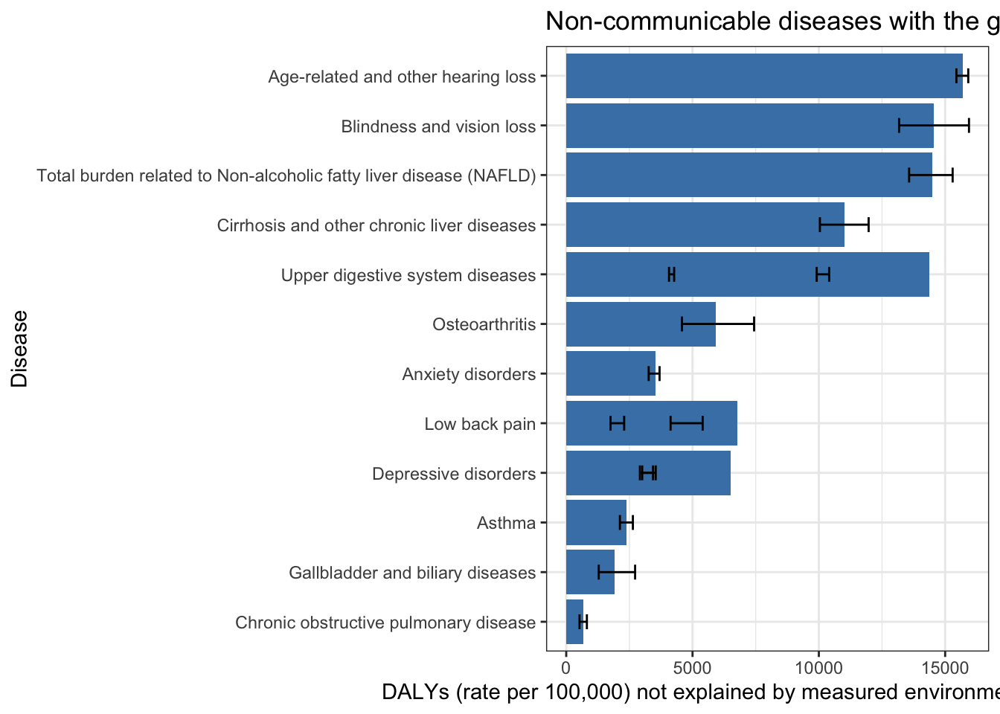
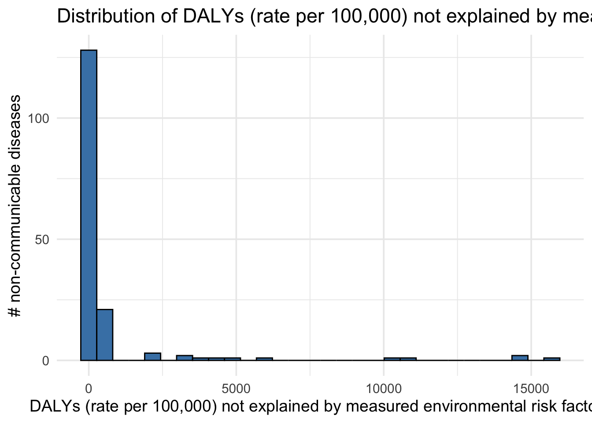

Global burden of disease statistics
Isobel Beasley
2025-09-11
Last updated: 2025-09-15
Checks: 7 0
Knit directory:
genomics_ancest_disease_dispar/
This reproducible R Markdown analysis was created with workflowr (version 1.7.1). The Checks tab describes the reproducibility checks that were applied when the results were created. The Past versions tab lists the development history.
Great! Since the R Markdown file has been committed to the Git repository, you know the exact version of the code that produced these results.
Great job! The global environment was empty. Objects defined in the global environment can affect the analysis in your R Markdown file in unknown ways. For reproduciblity it’s best to always run the code in an empty environment.
The command set.seed(20220216) was run prior to running
the code in the R Markdown file. Setting a seed ensures that any results
that rely on randomness, e.g. subsampling or permutations, are
reproducible.
Great job! Recording the operating system, R version, and package versions is critical for reproducibility.
Nice! There were no cached chunks for this analysis, so you can be confident that you successfully produced the results during this run.
Great job! Using relative paths to the files within your workflowr project makes it easier to run your code on other machines.
Great! You are using Git for version control. Tracking code development and connecting the code version to the results is critical for reproducibility.
The results in this page were generated with repository version 0fabf44. See the Past versions tab to see a history of the changes made to the R Markdown and HTML files.
Note that you need to be careful to ensure that all relevant files for
the analysis have been committed to Git prior to generating the results
(you can use wflow_publish or
wflow_git_commit). workflowr only checks the R Markdown
file, but you know if there are other scripts or data files that it
depends on. Below is the status of the Git repository when the results
were generated:
Ignored files:
Ignored: .DS_Store
Ignored: .Rproj.user/
Ignored: analysis/figure/
Ignored: data/.DS_Store
Ignored: data/gbd/.DS_Store
Ignored: data/gbd/ihme_gbd_2019_global_disease_burden_rate_all_ages.csv
Ignored: data/gbd/ihme_gbd_2019_global_paf_rate_percent_all_ages.csv
Ignored: data/gbd/ihme_gbd_2021_global_disease_burden_rate_all_ages.csv
Ignored: data/gbd/ihme_gbd_2021_global_paf_rate_percent_all_ages.csv
Ignored: data/gwas_catalog/
Ignored: data/who/
Ignored: output/gwas_cat/
Ignored: output/gwas_study_info_cohort_corrected.csv
Ignored: output/gwas_study_info_trait_corrected.csv
Ignored: output/gwas_study_info_trait_ontology_info.csv
Ignored: output/gwas_study_info_trait_ontology_info_l1.csv
Ignored: output/gwas_study_info_trait_ontology_info_l2.csv
Ignored: output/trait_ontology/
Ignored: renv/
Unstaged changes:
Deleted: analysis/level_1_disease_group.Rmd
Modified: analysis/level_2_disease_group.Rmd
Deleted: analysis/non_ontology_trait_collapse.Rmd
Deleted: analysis/trait_ontology_collapse.Rmd
Note that any generated files, e.g. HTML, png, CSS, etc., are not included in this status report because it is ok for generated content to have uncommitted changes.
These are the previous versions of the repository in which changes were
made to the R Markdown (analysis/gbd_data_plots.Rmd) and
HTML (docs/gbd_data_plots.html) files. If you’ve configured
a remote Git repository (see ?wflow_git_remote), click on
the hyperlinks in the table below to view the files as they were in that
past version.
| File | Version | Author | Date | Message |
|---|---|---|---|---|
| Rmd | 0fabf44 | IJbeasley | 2025-09-15 | workflowr::wflow_publish("analysis/gbd_data_plots.Rmd") |
| html | 64d6c1c | IJbeasley | 2025-09-12 | Build site. |
| Rmd | 296be71 | IJbeasley | 2025-09-12 | Updating disease burden plots with new paf information |
| html | 6caf721 | IJbeasley | 2025-09-12 | Build site. |
| Rmd | 18ffbd1 | IJbeasley | 2025-09-12 | workflowr::wflow_publish("analysis/gbd_data_plots.Rmd") |
| html | f8b699d | IJbeasley | 2025-09-11 | Build site. |
| Rmd | e692d81 | IJbeasley | 2025-09-11 | Initial investigation into gbd paf |
library(data.table)
library(dplyr)
library(ggplot2)
library(stringr)Global burden of disease statistics
gbd_data <- data.table::fread(here::here("data/gbd/ihme_gbd_2019_global_disease_burden_rate_all_ages.csv"))
gbd_data[1:5, 1:5] measure location sex age
<char> <char> <char> <char>
1: DALYs (Disability-Adjusted Life Years) Global Both All ages
2: DALYs (Disability-Adjusted Life Years) Global Both All ages
3: DALYs (Disability-Adjusted Life Years) Global Both All ages
4: DALYs (Disability-Adjusted Life Years) Global Both All ages
5: DALYs (Disability-Adjusted Life Years) Global Both All ages
cause
<char>
1: Asthma
2: Interstitial lung disease and pulmonary sarcoidosis
3: Other chronic respiratory diseases
4: Cirrhosis and other chronic liver diseases
5: Esophageal cancerTop non-communicable diseases by DALYs (2019)
top_non_comm_diseases =
gbd_data |>
slice_max(n = 15, order_by = val) |>
pull(cause)
print(top_non_comm_diseases) [1] "Oral disorders"
[2] "Oral disorders"
[3] "Headache disorders"
[4] "Hemoglobinopathies and hemolytic anemias"
[5] "Fungal skin diseases"
[6] "Cirrhosis and other chronic liver diseases"
[7] "Gynecological diseases"
[8] "Age-related and other hearing loss"
[9] "Blindness and vision loss"
[10] "Total burden related to Non-alcoholic fatty liver disease (NAFLD)"
[11] "Bacterial skin diseases"
[12] "Upper digestive system diseases"
[13] "Headache disorders"
[14] "Gynecological diseases"
[15] "Chronic kidney disease" Global disease burden - top 15 non-communicable diseases by DALYs (2019)
gbd_data |>
slice_max(n = 15, order_by = val) |>
ggplot(aes(x = reorder(cause, val), y = val)) +
geom_col(fill = "steelblue") +
geom_errorbar(aes(ymin = lower, ymax = upper), width = 0.3) +
coord_flip() +
labs(
x = "Disease",
y = "DALYs (rate per 100,000)",
title = "Non-communicable diseases with the greatest global disease durden (DALYs - 2019)"
) +
theme_minimal(base_size = 14)
Distribution of DALYs (rate per 100,000) for non-communicable diseases (2019)
gbd_data |>
ggplot(aes(x = val)) +
geom_histogram(bins = 30, fill = "steelblue", color = "black") +
labs(
x = "DALYs (rate per 100,000)",
y = "# non-communicable diseases",
title = "Distribution of DALYs (rate per 100,000) for non-communicable diseases (2019)"
) +
theme_minimal(base_size = 14)
| Version | Author | Date |
|---|---|---|
| 64d6c1c | IJbeasley | 2025-09-12 |
Population Attributable Fraction (PAF) for risk factors for non-communicable diseases (2021)
Load PAF data
gbd_paf_sep <- data.table::fread(here::here("data/gbd/ihme_gbd_2019_global_paf_rate_percent_all_ages.csv"))
gbd_paf_data <-
gbd_paf_sep |>
filter(metric == "Percent") |>
filter(rei == "All risk factors")
gbd_paf_sep[1:5, 1:5] measure location sex age
<char> <char> <char> <char>
1: DALYs (Disability-Adjusted Life Years) Global Both All ages
2: DALYs (Disability-Adjusted Life Years) Global Both All ages
3: DALYs (Disability-Adjusted Life Years) Global Both All ages
4: DALYs (Disability-Adjusted Life Years) Global Both All ages
5: DALYs (Disability-Adjusted Life Years) Global Both All ages
cause
<char>
1: Chronic kidney disease
2: Chronic kidney disease
3: Idiopathic epilepsy
4: Idiopathic epilepsy
5: Tracheal, bronchus, and lung cancerIntegrate with DALY data
gbd_paf_data =
left_join(gbd_paf_data,
gbd_data |> select(cause, daly_rate = val)) |>
mutate(across(c(val, lower, upper), ~ ifelse(.x < 0, 0, .x))) |>
mutate(paf_total = daly_rate * (1- val)) |>
mutate(paf_total_lower = daly_rate * (1-lower) ) |>
mutate(paf_total_upper = daly_rate * (1-upper) ) Joining with `by = join_by(cause)`Top 25 non-communicable diseases by % DALYs explained by all risk factors (2019)
gbd_paf_data |>
slice_max(n = 25, order_by = val) |>
ggplot(aes(y = val, x = reorder(cause, val))) +
geom_col(fill = "steelblue") +
theme_bw() +
geom_errorbar(aes(ymin = lower, ymax = upper), width = 0.3) +
coord_flip() +
labs(y = "% DALYs explained by all risk factors",
x = "Disease"
)
| Version | Author | Date |
|---|---|---|
| 64d6c1c | IJbeasley | 2025-09-12 |
Top 15 non-communicable diseases by DALYs not explained by measured environmental risk factors (2019)
gbd_paf_data |>
slice_max(n = 15, order_by = paf_total) |>
ggplot(aes(y= paf_total, x = reorder(cause, paf_total))) +
geom_col(fill = "steelblue") +
theme_bw() +
geom_errorbar(aes(ymin = paf_total_lower,
ymax = paf_total_upper), width = 0.3) +
coord_flip() +
labs(y = "DALYs (rate per 100,000) not explained by measured environmental risk factors",
x = "Disease",
title = "Non-communicable diseases with the greatest global disease durden (DALYs - 2019)")
Distribution of DALYs not explained by measured environmental risk factors (2019)
gbd_paf_data |>
ggplot(aes(x = paf_total)) +
geom_histogram(bins = 30, fill = "steelblue", color = "black") +
labs(
x = "DALYs (rate per 100,000) not explained by measured environmental risk factors",
y = "# non-communicable diseases",
title = "Distribution of DALYs (rate per 100,000) not explained by measured environmental risk factors (2019)"
) +
theme_minimal(base_size = 14)
| Version | Author | Date |
|---|---|---|
| 64d6c1c | IJbeasley | 2025-09-12 |
Dalys not explained by measured environmental risk factors for top non-communicable diseases by DALYs (2019)
gbd_paf_data |>
filter(cause %in% top_non_comm_diseases) |>
ggplot(aes(x= reorder(cause, daly_rate), y = paf_total)) +
geom_col(fill = "steelblue") +
theme_bw() +
coord_flip() +
labs(y = "DALYs (rate per 100,000)",
x = "Disease",
title = "DALYs (rate per 100,000) for top non-communicable diseases (2019)")
PAF separated by risk factor type
gbd_paf_sep <-
gbd_paf_sep |>
filter(metric == "Percent") |>
filter(rei != "All risk factors")
gbd_paf_sep[1:5, 1:5] measure location sex age
<char> <char> <char> <char>
1: DALYs (Disability-Adjusted Life Years) Global Both All ages
2: DALYs (Disability-Adjusted Life Years) Global Both All ages
3: DALYs (Disability-Adjusted Life Years) Global Both All ages
4: DALYs (Disability-Adjusted Life Years) Global Both All ages
5: DALYs (Disability-Adjusted Life Years) Global Both All ages
cause
<char>
1: Chronic kidney disease
2: Idiopathic epilepsy
3: Tracheal, bronchus, and lung cancer
4: Leukemia
5: Chronic obstructive pulmonary disease# check does this match the total PAF data?
gbd_paf_sep_top =
gbd_paf_sep |>
filter(rei != "Drug use") |>
group_by(cause) |>
summarise(val = 1 - prod(1 - val)) |>
arrange(desc(val), cause)
gbd_paf_sep_top |> head()# A tibble: 6 × 2
cause val
<chr> <dbl>
1 Alcohol use disorders 1
2 Cervical cancer 1
3 Chronic kidney disease 1
4 Diabetes mellitus type 1 1
5 Diabetes mellitus type 2 1
6 Drug use disorders 1causes = gbd_paf_sep_top$cause
dplyr::all_equal(
gbd_paf_sep_top,
gbd_paf_data |>
dplyr::filter(cause %in% causes) |>
dplyr::select(cause, val) |>
dplyr::arrange(desc(val), cause)
)Warning: `all_equal()` was deprecated in dplyr 1.1.0.
ℹ Please use `all.equal()` instead.
ℹ And manually order the rows/cols as needed
This warning is displayed once every 8 hours.
Call `lifecycle::last_lifecycle_warnings()` to see where this warning was
generated.[1] "Different number of rows."
sessionInfo()R version 4.3.1 (2023-06-16)
Platform: aarch64-apple-darwin20 (64-bit)
Running under: macOS 15.6.1
Matrix products: default
BLAS: /Library/Frameworks/R.framework/Versions/4.3-arm64/Resources/lib/libRblas.0.dylib
LAPACK: /Library/Frameworks/R.framework/Versions/4.3-arm64/Resources/lib/libRlapack.dylib; LAPACK version 3.11.0
locale:
[1] en_US.UTF-8/en_US.UTF-8/en_US.UTF-8/C/en_US.UTF-8/en_US.UTF-8
time zone: America/Los_Angeles
tzcode source: internal
attached base packages:
[1] stats graphics grDevices datasets utils methods base
other attached packages:
[1] stringr_1.5.1 ggplot2_3.5.2 dplyr_1.1.4 data.table_1.17.8
[5] workflowr_1.7.1
loaded via a namespace (and not attached):
[1] gtable_0.3.6 jsonlite_2.0.0 crayon_1.5.3 compiler_4.3.1
[5] renv_1.0.3 promises_1.3.3 tidyselect_1.2.1 Rcpp_1.1.0
[9] git2r_0.36.2 callr_3.7.6 later_1.4.2 jquerylib_0.1.4
[13] scales_1.4.0 yaml_2.3.10 fastmap_1.2.0 here_1.0.1
[17] R6_2.6.1 labeling_0.4.3 generics_0.1.4 knitr_1.50
[21] tibble_3.3.0 rprojroot_2.1.0 RColorBrewer_1.1-3 bslib_0.9.0
[25] pillar_1.11.0 rlang_1.1.6 utf8_1.2.6 cachem_1.1.0
[29] stringi_1.8.7 httpuv_1.6.16 xfun_0.52 getPass_0.2-4
[33] fs_1.6.6 sass_0.4.10 cli_3.6.5 withr_3.0.2
[37] magrittr_2.0.3 ps_1.9.1 grid_4.3.1 digest_0.6.37
[41] processx_3.8.6 rstudioapi_0.17.1 lifecycle_1.0.4 vctrs_0.6.5
[45] evaluate_1.0.4 glue_1.8.0 farver_2.1.2 whisker_0.4.1
[49] rmarkdown_2.29 httr_1.4.7 tools_4.3.1 pkgconfig_2.0.3
[53] htmltools_0.5.8.1